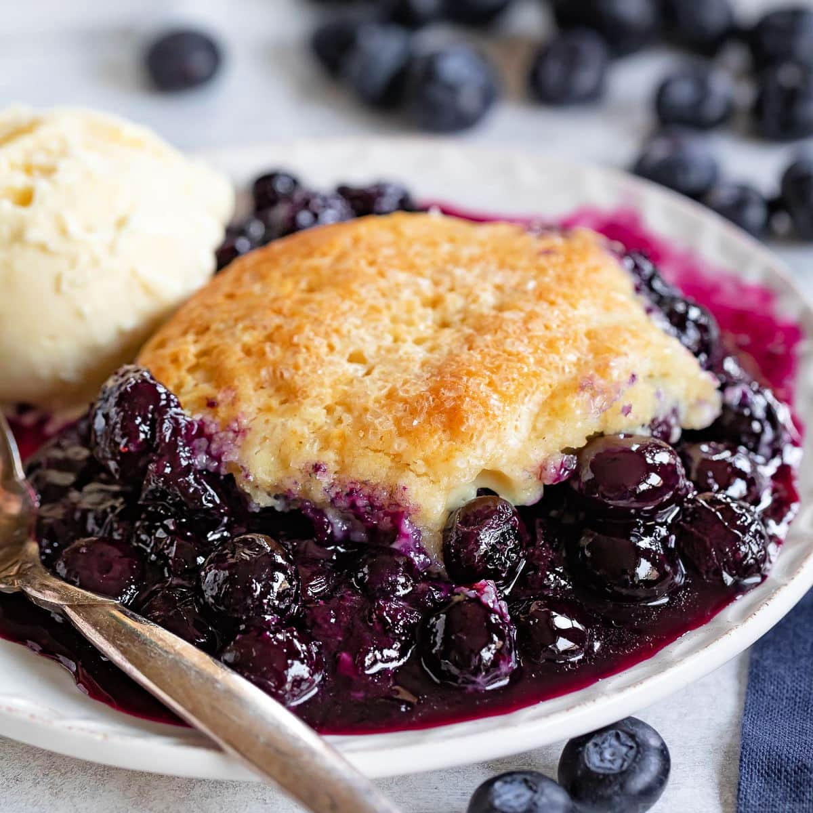

Blue Berry Cobbler

Description
Blueberry Cobbler is a delicious dessert that features sweet,
juicy blueberries topped with a biscuit-like crust.
It's a classic American dessert that is loved for its simplicity and comforting flavors.
Ingrediants
THE FILLING
- 4 cups fresh blueberries
- 1/2 cup granulated sugar
- 2 tablespoons cornstarch
- 1 tablespoon lemon juice
- 1 teaspoon lemon zest
THE TOPPING
- 1 cup all-purpose flour
- 1/4 cup granulated sugar
- 1 teaspoon baking powder
- 1/4 teaspoon salt
- 1/4 cup cold unsalted butter, cut into small pieces
- 1/4 cup milk
- 1 teaspoon vanilla extract